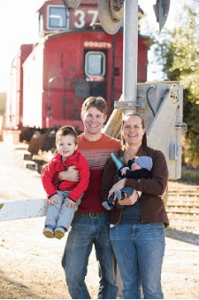

Our Story and Our Team
CJN Event Planning is owned by San Luis Obispo County natives Chris and Jamie Neutill. Upon Jamie's, graduation from Cal Poly in 2008 with a degree in Special Event Planning and Administration, the couple excitedly chose to venture into the world of professional event planning.
Meet our Team:
Wedding Coordinator: Rikki Rylance Rikki has been involved the the Food and Beverage industry for over 13 years. While working for Martin Resorts she moved her way up from serving in the restaurant to managing the Bar and the Banquet Department. She married her long time love Chris in 2013 and had their daughter Kinsley in 2014. Rikki is currently working to obtain her degree as a Registered Nurse, helping people in a different aspects of their life. Rikki enjoys spending her free time at Crossfit Northern Inferno, soaking up the sun with her family and friends, going to concerts and anything related to the Detroit Red Wings. Rikki's years of experience paired with her relaxed personality make her a perfect fit to plan and coordinator your wedding day.
Office Assistant: Laurel Shepherd Laurel and her husband are high school sweethearts. They got married in 2005. Moved to Paso Robles in 2008 from Bakersfield, CA. They had their first child Addyson in 2010 and their second child Aimee in 2014. Laurel loves to plan and be creative with DIY projects. Laurel keeps us on track and organized in our office she is our floor plan and layout master.